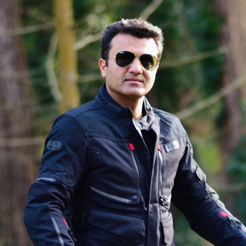
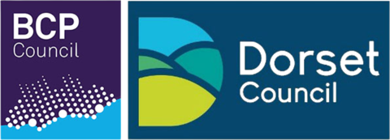

About BPC
Unity in Diversity
A community of Indians in Dorset celebrating culture, organising events and supporting each other.
Who we are
The heart of our Indian community
BPC is more than just a group — it's a family brought together by shared traditions, vibrant celebrations and a spirit of togetherness.
From cultural festivals and wellness programmes to charity drives and social events, we create moments that connect hearts and celebrate our rich heritage. We welcome the Indian community and friends of every background across Bournemouth, Poole and Christchurch — preserving traditions, embracing diversity and building a stronger community for everyone.
Our story
From a radio show to a community
BPC began with music. What started as Music Lovers of Bollywood — a small group and a weekly Bollywood music broadcast on local radio — grew into a thriving network of professionals, families and friends. Today the BPC Indian Community offers social, cultural and educational activities all year round, from Holi and Diwali to dance, wellbeing, networking and charity events.
What we stand for
Celebrating culture
Festivals, music, dance and food that keep our traditions alive and share them with everyone.
Bringing people together
Events and networking that turn newcomers into friends and neighbours into family.
Everyone is welcome
Proudly British Indian and open to all — whatever your background, age or ability.
Giving back
Working with local charities on mental health, domestic violence awareness, inclusion and refugee integration.
The people behind BPC
Our Team
-
Poonam Paranjpe
Founding Member
Special Educational Needs Practitioner, educator and community connector, with 15 years in community development.
Read full bio
Poonam moved to the UK from India 21 years ago to pursue her second master's degree, and has an academic background in Clinical Psychology, Public Health and Health Promotion. She believes education is the cornerstone of personal growth.
Outside work and community life, she loves cooking and dancing.
-
Anjali Mavi
Co-Founder
Community leader, radio presenter and creative facilitator. Anjali leads a 40-strong women's Indian dance group performing across Dorset and Hampshire.
Read full bio
Anjali came to England from India 18 years ago and holds an MBA in Marketing and Human Resources. With a background in administration, recruitment and welfare, she has worked extensively with diverse communities, women's groups and international professionals, helping them access opportunities and build confidence.
She works closely with charities across Dorset and Hampshire on domestic violence awareness, mental health, cultural inclusion and refugee integration.
-
Ramesh Lal
Co-Founder
Optometrist and proud British Indian who helped grow a weekly Bollywood radio broadcast into BPC.
Read full bio
Born to Indian parents in Kenya, Ramesh moved to the UK aged 11 and grew up in the Midlands. He studied optometry in Glasgow before settling in Bournemouth.
Until recently he ran a social enterprise in Kinson, Bournemouth, dedicated to community support.
-
Abhishek Jhawar
Co-Founder
Abhi drives BPC's cultural events and networking programmes, bringing business and technology leadership to the community.
Read full bio
Abhi combines professional expertise in business leadership and technology with a passion for community building.
He's also DJ Abhi UK, creating music experiences that celebrate Indian culture and connect people through rhythm.
-

Jitender Mavi
Founder, Music Lovers of Bollywood
Known as DJ Mav, Jitender started the group that became BPC — and is our go-to tech expert and problem solver.
Read full bio
Professionally, Jitender is a Senior Director in Investment Banking at HSBC, bringing deep finance and technology know-how to the community.
He's an amazing Bhangra dancer, a passionate biker and a cricket enthusiast — always ready to support the team at community events, especially our charity cricket matches.
Be part of our community
Come along to an event, volunteer with us, or just say hello.
Thank you
Proud Sponsors
